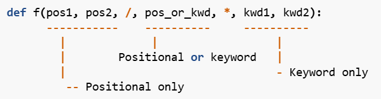

3. Estructuras de datos
Prefacio
- Una estructura iterable es aquella que puede ser “recorrida”, es decir, que se puede “iterar”.
- Clasificación
Estructuras de datos secuenciales
- Se basan en un ordenamiento secuencial de los elementos, que depende de cómo son ingresados.
- Incluye
tuple,list,stry estructuras comostackycola
- Podemos recorrerlos usando un
fory tenemos certeza del orden en que se recorren los datos. Así mismo, podemos obtener el n-ésimo elemento.
Estructuras de datos no-secuenciales
- Almacenan los datos sin establecer un orden fijo
- Permiten recorrer todos sus datos, pero no garantizan el orden de retorno o si este orden se mantiene constante durante la ejecución del programa.
- Son útiles para la búsqueda de datos.
Diferencias entre EDDs
| Ventajas | Desventajas | Utilidades | Observaciones | |
|---|---|---|---|---|
| Tuples | • Ordenadas → indexación, slicing, etc. • Inmutables → hasheables(*) | • Inmutables | • Llaves de diccionario • Retorno múltiple • Registros fijos | (*) sólo si contienen elementos inmutables |
| Named tuples ( from collections import namedtuple) | • Ordenadas • Inmutables • Permiten nombrar sus campos • Permiten realizar copias(*) | • Inmutables | • Alternativa más simple a una Clase con puros atributos • Simplifica código | (*) usando el método _replace() |
| Stacks | • LIFO • Puede implementarse con listas | • En un stack estricto, sólo podrías acceder a los elementos en un extremo. | • Revertir secuencias • Mecanismos de hacer/deshacer. | |
| Colas | • FIFO | • No puede implementarse con listas (*), requiere otra EDD (deques). | • Listas de espera | (*) poco eficiente |
| Deques ( from collections import deque ) | Insertar/eliminar en los extremos es eficiente | • Poco eficientes para acceso indexado | • Eficientes para implementar Stacks y Colas • Guardar los últimos N elementos ( deque(maxlen=N)) | |
| Diccionarios | • Acceder al valor de una llave es eficiente • Permiten cualquier objeto como valores • Las vistas de diccionario (*) son objetos iterables, dinámicos, que permiten comportamientos de conjuntos (sets). • Pueden crearse por comprensión | • Acceder a la llave asociada a un valor es poco eficiente • Solo permiten objetos hasheables como llaves | (*) son los objetos que retornan los métodos keys() , values() y items() | |
| Defaultdicts ( from collections import defaultdict ) | • Permiten establecer un valor predeterminado para cada llave con que se llama el diccionario | • No se activa el valor por defecto si se llama con el método get() | • Agrupación de datos (ej. defaultdict(list)) | |
| Sets | • Solo permiten 1 objeto de cada tipo • Comprobar existencia ( in) es • Pueden crearse por comprensión • Son eficientes para realizar operaciones matemáticas de conjuntos | • Solo pueden contener objetos hasheables • No permiten acceso indexado | • Revisar existencia • Eliminar duplicados |
Tuplas
- Sirven para manejar datos de forma ordenada e inmutable.
- No permite agregar/eliminar, ni modificar su contenido.
- Sin embargo, si por ejemplo contienen una lista, sí se puede modificar los elementos de la lista. Esto debido a que, no son un elemento de la tupla, sino que están dentro de un elemento de esta.
- Comúnmente son heterogéneas.
- La función
tuple()convierte un iterable en una tupla.
Crear una tupla vacía
variable = ()
variable = tuple()
Crear una tupla con 1 elemento
variable =(<elemento>, )
Al momento de la creación se pueden omitir los paréntesis, pero cada vez que se retorna una tupla se hace con paréntesis para interpretarla correctamente.
>>> b = 0, 1, 2
>>> b
(0, 1, 2)La anotación se hace con el módulo typing
from typing import Tuple
variable: Tuple[int] = (1, 2, 3)Hash
- Un hash es un número que Python calcula a partir del contenido de un objeto.
- Puede ser utilizado para saber si 2 objetos son iguales de manera eficiente sin tener que comparar elemento por elemento.
- Para obtener el hash de un objeto se ocupa el método
__hash__Sólo se puede ocupar en estructuras de datos inmutables que contengan elementos inmutables.
>>> b = (1, 2, 3) >>> print(b.__hash__()) 684963049275 >>> c = (1, [3, 4], 0) >>> print(c.__hash__()) #TypeError
Desempaquetado de elementos
Las tuplas pueden ser desempaquetadas en variables individuales.
x, z, y = tupla
# la tupla debe tener 3 elementos exactos
x = tupla[0]
# accede al primer elemento de la tuplaLas funciones pueden retornar múltiples elementos si retornan una tupla.
def funcion(a, b):
return (a * b, a // b, a ** a)
x, y, z = funcion(8, 4)
# x == 8 * 4 == 32
# y == 8 // 4 == 2
# z == 8 ** 8 == 16.777.216El operador * (asterisco) permite desempaquetar elementos desde listas y tuplas.
>>> tupla = (1, 2, 3, 4)
>>> print(*tupla)
1 2 3 4
>>> print(*tupla, sep="\n")
1
2
3
4El operador * también permite recopilar en una lista a un grupo de elementos relativos al primer y último elemento de una lista o tupla.
- Este uso ocurre al ocuparlo al lado izquierdo de una asignación (donde Python sólo permite poner 1 * ).
tupla = (1, 2, 3, 4, 5)
# Obtener los elementos de al medio
inicial, *relleno, final = tupla
# inicial == 1
# relleno == [2, 3, 4]
# final == 5
# Obtener los elementos del inicio o final
*inicio, ultimo_elemento = tupla
# inicio == [1, 2, 3, 4]
# ultimo_elemento == 5
primer_elemento, *fin = tupla
# primer_elemento == 1
# fin == [2, 3, 4, 5]Named tuples
- Estructuras que permiten definir campos para cada una de las posiciones en que han sido ingresados los datos.
- Requiere definir un objeto con los nombres de los atributos que tendrá la tupla.
- Importa el módulo
fromcollectionsimportnamedtuple
- Asigna un nombre a la tupla y los nombres a los campos
NombreTupla =namedtuple('NombreTupla_type', ['campo1', 'campo2', 'campo3'])Alternativamente, en lugar de una lista de atributos, se puede pasar una string con los atributos
NombreTupla= namedtuple('NombreTupla_type', 'Campo1, Campo2, Campo3')
- Instancia e inicializa la tupla
variable = NombreTupla(valor1, valor2, valor3)
- Accede a los valores
variable.campo1retornavalor1type(variable)retornaNombreTupla_type(entre otras cosas)
- Importa el módulo
Las named tuple son inmutables igual, pero permiten generar copias reemplazando valores de sus campos, mediante el método _replace
c1_mod = c1._replace(name="Antonio", age=31)Stacks (o pilas)
- Funcionan como una pila de objetos, uno arriba del otro.
- Los objetos nuevos se ponen arriba de la pila.
- Cuando se sacan objetos, se saca el último puesto.
- Es una estructura LIFO (Last In, First Out).
- Utilidades
- Botón back (volver) en los navegadores de internet.
- Revertir secuencias.
Operaciones sobre pilas
- Principales
- push: agrega un elemento al tope del stack.
- pop: elimina el elemento que está en el tope del stack, es decir, el último que fue agregado.
- Otras: peek (solo muestra el elemento que está en el tope), consultar cuántos elementos tiene el stack, preguntar si está vacío, etc.
Se pueden implementar ocupando listas
- crear un stack vacío —>
stack = []
- push —>
stack.append(elemento)
- pop —>
stack.pop()
- peek —>
stack[-1]
- largo —>
len(stack)
- vacío —>
len(stack) == 0
Colas
- Estructura que mantiene objetos ordenados de acuerdo a su orden de llegada.
- Es una estructura FIFO (First-in, First-out)
Operaciones sobre colas
- Principales
- enqueue (encolar): agrega un elemento al final de la cola.
- dequeue (descolar): saca el elemento al inicio de la cola, es decir, el que lleva más tiempo en la cola.
- Otras: peek, revisar cantidad de elementos, revisar si está vacía, etc.
Es poco eficiente implementar una cola con listas
- enqueue es fácil con
append, pero dequeue conpop(0)no es eficiente.
- Una lista guarda sus elementos en un segmento contiguo de memoria. Así, cuando uno ejecuta
pop(0)se realizan N operaciones:- Eliminar el elemento
- Mover N-1 elementos a la izquierda, para dejar el espacio vacío al final de la lista.
Colas de doble extremo (deque)
- Un deque (double-ended queue) es una estructura secuencial en la que es posible agregar y sacar elementos desde ambos extremos en forma eficiente, con un costo constante por operación.
- En Python, es provista por la clase
dequedel módulocollectionsOperaciones
- crear deque
deque()crea uno vacío
deque(lista)crea uno con una lista
- añade elementos
deque.appendleft(elemento)
deque.append(elemento)—> enqueue
- elimina elementos
deque.popleft()—> dequeue
deque.pop()
- primer (
deque[0]) y último (deque[-1]) elemento
- largo —>
len(deque)
- vacío —>
len(deque) == 0
- limpiarlo —>
deque.clear()
- También acepta los métodos
removeycountcomo en las listas.
- Debido a las operaciones disponibles, se considera que esta es una generalización de los stacks y colas.
- crear deque
- Se puede acceder a los elementos mediante su índice, pero esto no es eficiente como en las listas.
- Para llegar a la posición
iel PC parte en la posición0y se va moviendo hasta encontrar la posicióni.
- Para llegar a la posición
Diccionarios
- Estructura de datos no secuencial y mutable que permite asociar pares de elementos mediante la relación llave-valor (key-value).
- También es una estructura de “mapeo” (mapping), porque asocian o mapean un valor a otro.
- En Python, los diccionarios están implementados por la clase
dictCreación de un diccionario ocupa llaves (
{}) y cada par key-value se escribe comokey:valuemonedas = { "Chile": "Peso", "Perú": "Soles", "España": "Euro" }- Un diccionario vacío se crea como
dicc = {}
Para acceder a un valor se ocupa la llave correspondiente como índice.
Si no existe la llave, lanzaKeyErrorvalor = diccionario[key]El método
gettambién permite obtener un valor a partir de una llave, pero aquí podemos manejar el caso donde no exista la llave.diccionario.get(llave, alternativa)retorna el valor asociado allavesi está en el diccionario. En caso contrario, retornaalternativa(si no es especificada, retornaNone). - Un diccionario vacío se crea como
Los diccionarios son mutables
monedas["Vaticano"] = "Euro"
- Crea el par key-value si no existe esa llave en el diccionario
- O, si está la llave, actualiza su valor a “Euro”
- Permiten llaves y valores de diferentes tipos entre ellos.
Para eliminar items se usa la sentencia del
del diccionario[llave]
Si no está la llave, lanza KeyError
- El comportamiento por defecto al utilizar sentencias sobre el diccionario es operar sobre los valores de las llaves.
- ej. para comprobar la presencia de una llave se puede ocupar
in
- ej. para comprobar la presencia de una llave se puede ocupar
Eficiencia
- Acceder al valor asociado a una llave es una operación muy eficiente —>
- Acceder a la llave asociada a un valor implica recorrer todos los pares key-value, o sea, muy poco eficiente —>
Llaves permitidas en diccionarios
Los diccionarios están implementados a partir de una estructura llamada tabla de hash. En esta estructura, existe una función matemática (función de hash) que se le aplica a la llave para saber en qué lugar debe guardar un determinado valor.
- Una llave válida debe cumplir
- Ser única
- Ser hasheable, es decir, que se le pueda pasar a la función de
hash()
Requisitos para que un objeto sea hasheable
- Implementar el método
__hash__- Retorna un entero que sirve de entrada para la función de hash.
- El valor retornado por
__hash__no cambia durante el ciclo de vida del objeto
- Implementa el método
__eq__- Retorna
Truesi dos objetos deben ser considerados iguales.
- Retorna
- Si dos objetos son iguales según el método
__eq__, entonces el valor que retorna__hash__debe ser el mismo.- No es necesario que esto se cumpla al revés, es decir, puede ocurrir que dos elementos compartan el valor retornado por
__hash__pero que sean distintos entre sí (coalición de hash).
- No es necesario que esto se cumpla al revés, es decir, puede ocurrir que dos elementos compartan el valor retornado por
- Todos los built-ins de Python que son inmutables son hasheables —>
int,str,tuple- Todos los built-ins de Python que son mutables no son hasheables —>
list
- Todos los built-ins de Python que son mutables no son hasheables —>
- Con respecto a las clases personalizadas:
- El método
__hash__retorna un valor único y fijo para cada instancia.- —> no depende de los valores de los atributos
- El método
__eq__retornaTruesólo si corresponde exactamente al mismo objeto.
- Los objetos son hasheables incluso si almacenan valores no hasheables en alguno de sus atributos.
- El método
- Uno podría modificar el método
__eq__para comparar según el valor de algún atributo, pero tendría que modificar__hash__también para que retornehash(atributo).
- Si no se modifican los métodos
__eq__/__hash__, entonces cualquier objeto de una clase personalizada puede ser una llave de diccionario.
Valores permitidos en diccionarios
No hay restricciones, por lo que permiten…
- Valores mutables o inmutables
- Valores hasheables o no
- Otros diccionarios
- Funciones, clases
Puedes poner el nombre de una función, así al llamar dict[key] obtienes un callable al que le puedes pasar los argumentos de esta.
- Si son varios argumentos se puede crear un tuple y desempaquetarlo.
- Para evitar error de desempaquetado, se puede definir la función con argumentos extra (para captar los que sobran), usando los operadores
*argsy**kwargs
Podrías hacer un registro de las instancias de una clase que se han creado
class MiClase:
# Diccionario a nivel de clase para guardar las instancias creadas
_instancias_creadas = {}
def __init__(self, texto):
self.texto = texto
print(f"Creando instancia para: {texto}")
@classmethod
def obtener_o_crear(cls, texto):
# Preguntamos si el string ya está en las llaves del diccionario
if texto not in cls._instancias_creadas:
# Si no está, creamos la instancia y la guardamos
cls._instancias_creadas[texto] = cls(texto)
else:
print(f"La instancia para '{texto}' ya existía. Retornando la existente.")
return cls._instancias_creadas[texto]cls en lugar de selfMétodos útiles
keys()retorna todas las llaves
values()retorna todos los valores
items()retorna todos los pares key-value.- Cada par en la forma de una tupla
(key, value)
- Cada par en la forma de una tupla
Estos métodos retornan vistas de diccionario. Estas son objetos iterables, dinámicos*, que permiten comportamientos de conjuntos (sets).
*si uno modifica el diccionario, la vista se actualiza en tiempo real.
Diccionarios por comprensión
diccionario = {<expresion_key>: <expresion_value> for <elemento> in <iterable> if <condicion>}
Defaultdicts
- Estructura de datos del módulo
collections
- Diccionarios que permiten asignar un valor por defecto a cada key con la que se llama el diccionario.
- Para crear uno se necesita el nombre de una función (o un callable) que retornará el valor que se asigne por defecto.
Ejemplo
- Sea
vocales = defaultdict(int)un diccionario de este tipo.
- En caso de llamar
vocales["e"]y no exista dicha llave, entonces va a asignarle el valor0(valor predeterminado de la funciónint)
- Sea
- La función
get()no activa la creación del valor por defecto, esto sólo sucede si se llama con corchetes[](que llama internamente a__getitem__).
Sets (o conjuntos)
- Contenedores mutables, no-ordenados y que no repiten elementos.
- Utilizan tablas de hash para almacenar los datos, por lo que solo pueden contener objetos hasheables.
- Pueden ser heterogéneos.
- No soportan acceso indexado.
- Se usan para eliminar duplicados o para revisar si un elemento está en esta estructura o no, de forma eficiente ( ).
Formas de crear un set
- Función
set()conjunto = set()crea un set vacío
conjunto = set(<iterable>)crea un set a partir de un iterable, eliminando repetidos.
- Usando llaves
{}conjunto = {1, 2, 3, 4}
- Por comprensión
set = {<expresion>for<elemento>in<iterable>if<condicion>}
Operaciones con sets
conjunto.add(<elemento>)—> acepta 1 argumento que consiste en un objeto hasheable.
conjunto.remove(<elemento>)—> retornaKeyErrorsi no está en el conjunto
conjunto.discard(<elemento>)—> hace lo mismo queremove()pero no lanza error.
- Iterar con un
forrecorre todos los elementos, pero el orden no está asegurado en ninguna ejecución.
- Para verificar la presencia de un elemento:
in- Esto toma , a diferencia de las listas donde toma (porque tiene que recorrer toda la lista para confirmar si un elemento está presente o no).
- Operaciones matemáticas de conjuntos
- Unión —>
- Operador
|
Método
unionset_c = set_a.union(set_b)
- Operador
- Intersección —>
- Operador
&
Método
intersectionset_c = set_a.intersection(set_b)
- Operador
- Diferencia —>
- Operador
-
Método
differenceset_c = set_a.difference(set_b)
- Operador
- Diferencia simétrica (o XOR) —>
- Operador
^
Método
symmetric_differenceset_c = set_a.symmetric_difference(set_b)
- Operador
- Unión —>
Comparar conjuntos
- Un conjunto es subconjunto de un conjunto si todos los elementos en se encuentran en .
- Se denota por e incluye el caso donde son iguales. Se puede verificar evaluando
set_a <= set_b
- Para evitar el caso donde son iguales se ocupa
set_a < set_by decimos que es un subconjunto propio.
- Se denota por e incluye el caso donde son iguales. Se puede verificar evaluando
- Un conjunto es superconjunto de un conjunto si todos los elementos en se encuentran en .
- Se denota por e incluye el caso de la igualdad. Se puede verificar evaluando
set_a >= set_b
- Para evitar el caso de la igualdad se ocupa
set_a > set_by decimos que es un superconjunto propio.
- Se denota por e incluye el caso de la igualdad. Se puede verificar evaluando
- Dos conjuntos son iguales si contienen los mismos elementos ( ). Se puede confirmar evaluando
set_a == set_b
- Además, existen los métodos
issuperset()yissubset()que analizan como>=y<=, respectivamente.
Arguments y keyword arguments
- Describen dos tipos de argumentos en el llamado de funciones
- Argumentos (o positional arguments): usa el orden de los argumentos para establecer la correspondencia entre argumentos y parámetros
- Argumentos por palabra clave: van precedidos por un identificador (ej.
name=) en el llamado de una función.- Permiten ingresarse desordenados.
- Son una forma de referirse a la manera de especificar una cantidad variable de argumentos o parámetros en la definición de una función.
Argumentos parámetros
- Parámetros: nombres que recibe una función; se declaran en su definición.
- Argumentos: valores que se le entregan al llamarse.
Restricciones en el uso de argumentos posicionales y por palabra clave
- No pueden haber argumentos posicionales después de argumentos por palabra clave
- Si un argumento ya fue establecido mediante posición, no puede ser establecido por palabra clave.
Uso de operadores * y ** para pasar una cantidad variable de argumentos
fun(*argumentos)dondeargumentoses un iterable, permite desempaquetar el contenido y ocuparlos como argumentos posicionales.
fun(**argumentos)dondeargumentoses un diccionario, permite desempaquetar los ítems y ocuparlos como argumentos por palabra clave.
⚠️ El uso de estos operadores también sigue las restricciones de uso entre args y kwargs
Cantidad variable de parámetros
- Se puede establecer declarando parámetros con valores por defecto.
- Si en una declaración el orden de los parámetros importa, no es posible poner parámetros sin valor por defecto después de aquellos que sí tienen uno.
Uso de operadores * y ** para pasar una cantidad variable de parámetros
*argspermite declarar una cantidad arbitraría de argumentos posicionales. Al llamarse la función, se reciben esos argumentos y se contienen en una tupla accesible porargs
**kwargspermite declarar una cantidad arbitraría de argumentos por palabra clave. Al llamarse la función, se reciben esos argumentos y son contenidos en un diccionario accesible porkwargs
*args y **kwargs son exclusivas para cada tipo de argumentos, pero se pueden ocupar en simultáneo con parámetros mínimos y por defecto.
>>> def func3(a, b=3, *args, **kwargs):
print(f'a: {a}, b: {b}, args: {args}, kwargs: {kwargs})')
>>> func3(1)
a: 1, b: 3, args: (), kwargs: {})
>>> func3(1, 2)
a: 1, b: 2, args: (), kwargs: {})
>>> func3(1, 2, 3)
a: 1, b: 2, args: (3,), kwargs: {})
>>> func3(1, 2, 3, 4)
a: 1, b: 2, args: (3, 4), kwargs: {})
>>> func3(1, 2, 3, 4, c=5, d=6)
a: 1, b: 2, args: (3, 4), kwargs: {'c': 5, 'd': 6})
>>> func3(1, b=2, c=3, d=4)
a: 1, b: 2, args: (), kwargs: {'c': 3, 'd': 4})
>>> func3(a=1, b=2, c=3, d=4)
a: 1, b: 2, args: (), kwargs: {'c': 3, 'd': 4})⚠️ Por convención se usa args para referirse a argumentos posicionales y kwargs para referirse a argumentos por palabra clave, pero en la declaración podría ir cualquier nombre para estos.
- Sólo puede haber una declaración con
*y una declaración con**.- Siempre deben ir en ese orden (
*y luego**)
- No es posible declarar parámetros después del
**
- Sí se puede declarar parámetros entre
*y**, pero solo del tipo por palabra clave.
- Siempre deben ir en ese orden (
- En general una función se va a declarar de la siguiente forma
def funcion_general(arg1, arg2, *args, kwarg1, kwarg2, **kwargs)arg1yarg2son posicionales O por palabra clave
argscontiene una cantidad variable de posicionales.
kwarg1ykwarg2son solo por palabra clave
kwargscontiene una cantidad variable por palabra clave
Para especificar que un argumento se pase sólo de forma posicional se ocupa el símbolo /
{kind=link}

- donde
*hace la distinción para recibir solamente argumentos por palabra clave después de él. Alternativamente, en lugar de ocupar de ocuparlo, se puede poner*args.
- Al final de los argumentos por palabra clave puede ir el contenedor
**kwargs
Las anotaciones de tipo al hacer declaraciones con *args y **kwargs se refieren al tipo de elemento y valores, respectivamente, a los que se refieren estos contenedores.
from typing import Any
def funcion_general(
arg1: int, # Debe ser int (posicional O por clave)
arg2: str, # Debe ser str (posicional O por clave)
*args: float, # CADA posicional extra debe ser float
kwarg1: bool, # Debe ser bool (solo por palabra clave)
kwarg2: str = "default", # Debe ser str (solo por palabra clave con valor por defecto)
**kwargs: Any # CADA valor extra en kwargs puede ser de cualquier tipo (Any)
) -> bool: # La función retorna un booleano
return True